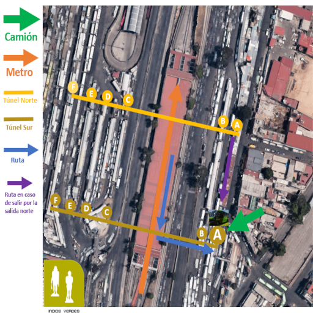

Destino: EcoCabañas AngeLiz desde Indios Verdes
Considera $57.00 de pasaje y una tarjeta de $20.00, porque ahora la están pidiendo para poder abordar.
Llega al metro Indios Verdes.
Camina en dirección contraria a la llegada del metro. La flecha grande naranja del croquis marca la dirección en la que llega el metro a la estación; tú camina hacia el lado contrario.
Baja las escaleras, sal de torniquetes y avanza a la izquierda por el túnel hacia la salida A.
Busca el camión negro con verde que anuncia: “Zumpango, Tequix, Apaxco por Mexiquense”.
Fórmate, paga $57.00, compra o lleva tu tarjeta de $20.00, pide destino Tequixquiac y guarda tu boleto.
El trayecto pasa por caseta 30-30, Zumpango y finalmente Tequixquiac.
